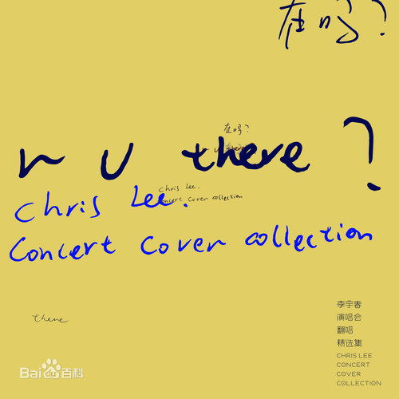

|  |
《在吗》是李宇春于2017年五月发行的翻唱合辑，本意为回馈歌迷，共包含歌曲15首，当 15 支作品以独特的频率在夜空徐徐滑行，当你如采撷一颗樱桃般将其收入囊中，你会明白，李宇春完成了一个「娓娓道来」的命题。最终，创作年代，演绎场合，甚至旋律，都将让位于叙述本身。叙述自然，叙述延绵不绝的青春，叙述熠熠生辉，也叙述人的生长与衰弱。每晚 9 点 31 分，15 段叙述，15 个社交载体，15 夜陪伴，15 次温故知新。 |
歌曲列表 |
| 春风十里 | ||
| 流言 | ||
| 闷 | ||
| 情书 | ||
| 我变了 | ||
| 南方姑娘 | ||
| 你的甜蜜 | ||
| 好久不见 | ||
| 天黑黑 | ||
| 忽然之间 | ||
| 最浪漫的事 | ||
| 你快乐所以我快乐 | ||
| 爱你爱到死 | ||
| 漂洋过海来看你 | ||
| 我的心里只有你没有他 |